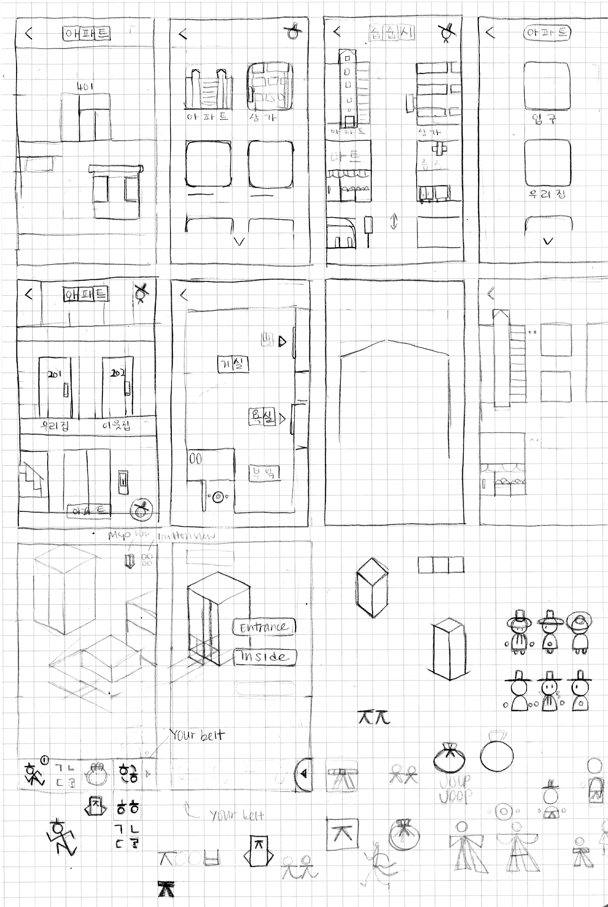

I had fun playing with Korean alphabets for the mascot design. For example, ㅎ stands for Korea/Korean and people often say it looks like a person wearing a hat. ㅈ stands for Joob Joob and is used as the ribbon for the mascot's hat.


Tools like task diagrams and wireframes were utilized to create a seamless user experience, from signing up as a new user to navigating through the app as a returning user.